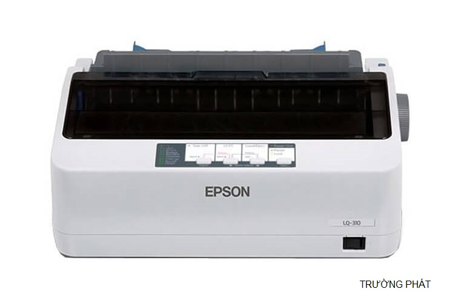
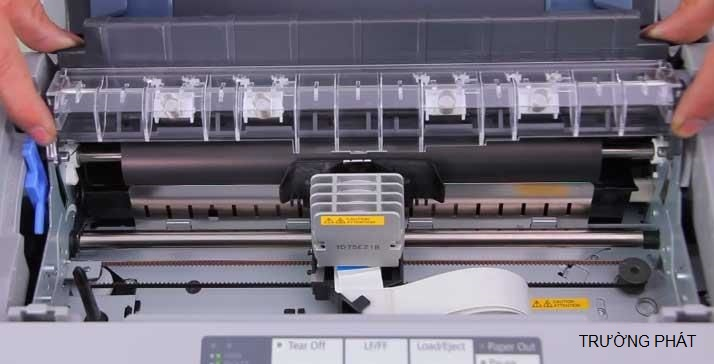
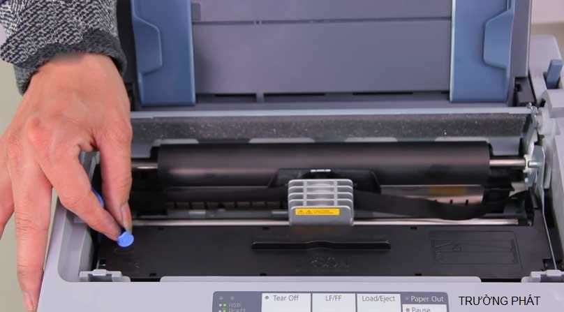
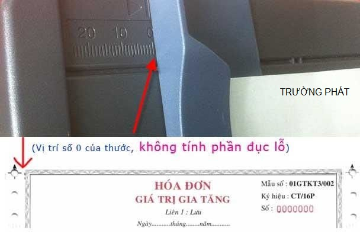
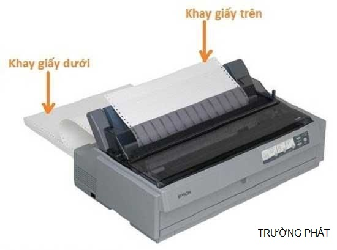

Cách Sử Dụng Máy In Kim Epson LQ310 – Giải Pháp Hiệu Quả Cho Doanh Nghiệp
Máy in kim Epson LQ 310 được coi là giải pháp in ấn tiết kiệm và nhanh gọn bậc nhất hiện nay. Sản phẩm được ứng dụng rộng rãi trong nhiều lĩnh vực như: văn phòng, cơ quan, xí nghiệp và nhà sách…
Với hiệu năng cao, tốc độ in nhanh, thiết kế nhỏ gọn, máy in kim EPSON LQ 310 đã có những bước thay đổi trong công nghệ in ấn. Mặc dù công nghệ in kim không còn nổi bật nhưng với những thay đổi so với bản LQ 300 huyền thoại thì LQ 310 đáng được sử dụng hơn rất nhiều.
Khác với máy in laser vốn được in ra theo dạng ảnh đồ họa, máy in kim sẽ in các ký tự ra theo dạng ma trận điểm. Vì thế, các dòng máy in càng hỗ trợ nhiều bảng mã sẽ càng in được nhiều loại văn bản hơn. Bộ nhớ đệm của Epson LQ310 đạt mức 128KB, gấp đôi các dòng máy trước.
Xem thêm: Ưu Và Nhược Điểm Của Máy In Kim?
Khả năng kết nối linh hoạt, giúp Epson LQ 310 đạt hiệu quả tối ưu, tạo ra 4 phần in (1 bản gốc + 3 bản sao). Thiết kế cổng kết nối USB, Serial và Parallel do đó máy in Epson sẽ kết nối được bất kỳ thiết bị nào.

Đặc điểm nổi bật
- Thiết kế đầu 24 kim cho tốc độ in nhanh, chất lượng in tốt
- Tốc độ in đến 416 ký tự/giây nhanh chóng, chính xác
- Cổng LPT1, Serial, USB dễ dàng kết nối các thiết bị đầu ra
- Kích thước nhỏ gọn bố trí ở mọi không gian làm việc
Lý do nên chọn Epson LQ 310 làm máy in hóa đơn?
- Tốc độ in nhanh
- Hiệu năng cao với tài liệu in nhiều bản
- Tuổi thọ cao hơn
- Khả năng kết nối linh hoạt
Hướng dẫn thay mực cho máy in kim Epson LQ 310
Cách thay mực máy in Epson LQ 310 bao gồm 6 bước cơ bản, các bạn chỉ cần thực hiện đúng theo thứ tự các bước là đã có thể thay xong mực cho máy mà không cần sự trợ giúp từ các thợ thay mực chuyên nghiệp.
Nếu chưa biết mực máy in kim xem thêm tại: Ruy Băng Máy In Kim Epson Là Gì?
Bước 1: Tắt máy, ngắt nguồn điện. Đảm bảo máy không còn hoạt động và trở về trạng thái ngắt trước khi tiến hành thay mực.

Bước 2: Mở nắp máy in Epson LQ 310. Lấy phần lõi chứa băng mực ra bằng cách nhấc lên theo phương thẳng đứng.
Bước 3: Lấy băng mực đã hết ra, lấy theo phương thẳng đứng để dải băng mực tách ra dễ dàng, không trầy xước hay vướng mắc.
Bước 4: Lấy hộp băng mới, lột bỏ bao bì. Đặt hộp băng mực mới vào trong máy, đúng chiều sao cho hai đầu hộp mực khớp vào khe và móc nhựa bên trong máy in kim Epson LQ 310.
Bước 5: Đặt băng mực vào giữa thanh định hướng dây mực và đầy in. Bạn có thể dùng nhíp, đầu bút hoặc các vật thon đầu để hỗ trợ thao tác. Không sử dụng tay trần vì mực in sẽ dính vào tay, không đảm bảo chất lượng in khi máy hoạt động. Không dùng vật sắc nhọn vì dễ gây xước.
Bước 6: Điều chỉnh độ căng của dây băng ở mức độ vừa đủ bằng cách xoay núm tròn ở đầu hộp băng mực. Không chỉnh dây quá căng vì có thể gây kẹt hoặc đứt dây mực in trong quá trình hoạt động.

Lưu ý khi sử dụng máy in kim để in hóa đơn
Thước máy in kim LQ310 phải để ở vị trí số 0
- Cần phải đặt thước của máy in đúng vị trí số 0 để khi hóa đơn được in ra sẽ không bị lệch. Nếu như đặt sai cần phải chỉnh lại vị trí ban đầu để in.
- Nếu như đặt không đúng thì phần đục lỗ của hóa đơn đục lỗ sẽ bị sai.

Máy in kim sẽ có 2 khay giấy:
- Khay trên: in từng tờ một, dành cho in hóa đơn đục lỗ và hóa đơn thường (không đục lỗ).
- Khay dưới: để in liên tục hóa đơn có đục lỗ, in một lúc nhiều hóa đơn.

Lưu ý:
- Khi in khay dưới bạn cần bật chế độ in liên tục trên máy in, tắt chế độ in liên tục khi in khay trên.
- Nếu các bạn đã có hóa đơn đục lỗ thì in ở khay trên (khay không đục lỗ) máy vẫn sẽ hoạt động bình thường. Khay đục lỗ sẽ in trong trường hợp nhiều mỗi lần in sẽ vào khoảng >100 tờ hóa đơn. Khi bạn in một lần với số lượng 1-10 tờ hóa đơn thì việc in ở khay trên sẽ giúp thao tác in nhanh hơn.
Cách cài đặt giấy ngay khớp xé máy in kim:
- Nếu đưa hóa đơn vào khay dưới (khay đục lỗ) thì sau khi bỏ giấy vào bạn cần nhấn nút Load/Eject để hóa đơn chạy vào đến đầu in kim.
- Nếu đưa hóa đơn vào khay trên: máy sẽ tự động nạp hóa đơn vào đầu in kim, nếu không tự động nạp thì máy đang gặp sự cố đầu cảm ứng hoặc do chưa bật chế độ tự nạp giấy (cần gạt in liên tục phải ở chế độ tắt).
Một số nguyên nhân giấy chưa nạp vào tới vị trí gốc:
- Có thể do mới sử dụng nên chưa quen bạn bỏ giấy vào khay trên (máy tự nạp) mà tạy lại giữ chặt hóa đơn khiến máy nạp hụt.
- Hóa đơn bị cong, không thẳng hay bị ẩm ướt
- In 1 tờ, nên giấy in mỏng không vừa bánh xe khiến nó giữ không chặt (khi đó dẫn tới tình trạng in hay bị lệch)
Với trường hợp thứ 3 cần phải xử lý như sau:
- Bạn cần phải tháo giấy ra và bỏ lại vào máy in rồi sử dụng nút Load/Eject.
- Khi giấy nằm quá sâu sẽ dẫn đến tình trạng lệch rất nghiêm trọng. Tùy vào mỗi loại máy in sẽ có những vị trí khác nhau, bạn cần phải xác định được vị trí đúng.
Cách xác định vị trí nạp giấy đúng:
- In thử máy in kim trên file word
- Lấy 1 tờ A4 trắng (nên dán 2 tờ lại với nhau để đảm bảo độ dày của giấy in) rồi bỏ vào khay trên khi đó giấy sẽ tự nạp và in nội dung từ file word.
- Thử in lại 1 lần nữa bằng tờ A4 vừa xong nếu nội dung trước và sau khớp nhau thì đã chính xác.
- Bỏ lại giấy in tiếp lần thứ 3 và phải chú ý đến kim in (nhớ thật chính xác). Nếu lần này khớp với 2 lần trước thì vị trí gốc là vị trí ta vừa xem. Khi in hóa đơn thật bỏ giấy mà không khớp vị trí gốc thì phải tháo giấy ra vào bỏ lại.
Với những hướng dẫn chi tiết trên, Trường Phát hi vọng bài viết này sẽ mang lại nhiều hữu ích cho bạn! Giúp bạn sử dụng máy in kim Epson LQ 310 không còn khó khăn nữa.
Cần nạp mực hoặc sửa máy in tận nơi? Mực In Trường Phát có mặt trong 30 phút tại TP.HCM — in test trước khi tính tiền, bảo hành 1 tháng.
0908.327.123 · 0819.007.394 (Zalo cả 2 số)